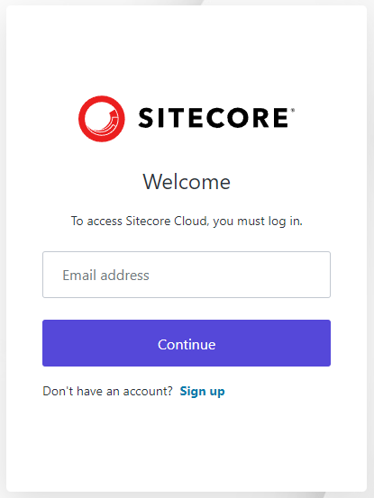
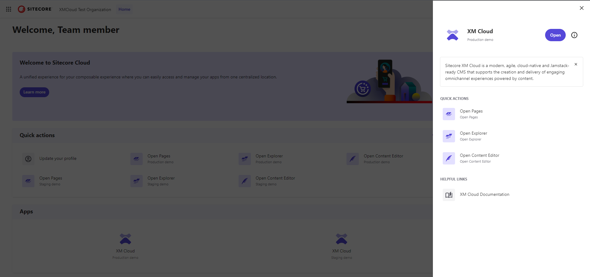

Log in to XM Cloud
Describes how to log in to XM Cloud.
To log in to XM Cloud, you must log in through the Sitecore Cloud Portal, then open the XM Cloud app you want to log in to.
Note
To access XM Cloud, you must be a part of the appropriate Sitecore Cloud Portal organization and have the appropriate app access. Your admin can invite you to the organization and grant you the appropriate access.
To log in to XM Cloud:
In a browser, open the Sitecore Cloud Portal at https://portal.sitecorecloud.io/.
On the login page, in the Email address field, enter the email address of your account, and click Continue.
In the Password field, enter your password, then click Continue. If your organization has enabled multi-factor authentication, follow the steps to authenticate.
In the Sitecore Cloud Portal home page, in the Apps section, click the XM Cloud app you want to log in to, then in the right-hand pane, click Open or click the related app or tool in the Quick actions section.
Note
If you have access to multiple organizations, you must switch to the appropriate organization before you can see the appropriate XM Cloud apps.
